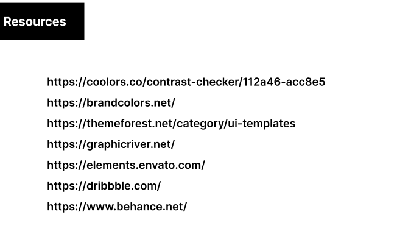

Tailwind
- BT component based, external css may , rapid grow(customize in sass)
TW Utiliti based. no external css , If customize more then use Tailwind . Big company use their own css framework that they make;
-
Extension css intelligence, add config file from cli. VS code > file
preference setting enable emmet.
- ctrl + space if not then manual write class
- flow bite /daisy ui for component
- VS : inline fold, ctrl+shift+p inline fold toggle/untoggle.
- cdn - practice (all file)
cll - code not use in project erase in production.
- grid BT > CSS > Tailwind
- pblm btn & icon : use d-inline if d-block rather flex
- Deploy netifly host github private
- Project related kono extension aca kina 1st search.
Customization
- cdn - config file add.
cli - tailwind.config.js
- every corrosponding have customization instruction.
- arbitrary value(specific value by me-!good coz TZ not handle this,we handle this.)
- in css color find exact color ctrl+f / text-[#code] / custome code add from tailwind
- color text-[#code], gradiant [#code] can use.
Breakpoint, Container
- Normally screen small , text wrap and container/div h increase if height not fixed.
- BP ar min with a container full width(max-width) . In mx-auto After device will increase container decrease.
- container use for a width L2R not end up !m/p - then mx-auto for center, if need total bg-color then use level up bg-color
- design (mobile first design) for md first, then xs>sm>md>lg. sm,md,lg more use.
Flex & Grid
- ponditi korta pari grid deya instead flex . with span
- center something, apply div up then flex.
- grid-flow-col row span if not place then next col, just think grid col
- centering ar 3 rule.
- text center , mx-auto , flex
- 2 col use flex , more then 2 use grid.
- think flex instead position
Width/Height
- pblm height : use p . take place inside & height grow up
- div ar h control by content , so can use m/p for solve.
- pblm card full-w: flex/grid then ok.
- when use padding content width less div height big;
- flex div inside nav(h-20) , align/justify not word coz div has no height ,inline div h-20 or something then work.
- case 1 : w-full mx-auto , always fullwidth !tigger mx-auto
case 2 : w-full max-w-7xl mx-auto , max-w-7xl ar ag porjonto full-width take. max-w ar pora tigger mx-auto same logic shirnk & take full width.
Spacing
- margin is solved by space between
- - margin can use.
- small device !use center always, can use p/px
- Parent div a pad ,also child div a pad
- mx/my-auto
- 4px rule
- p a h big when content wrap
- w-full , mx-5 give alike center
Image
- img can use as bg or img a mix-blend-screen & position
- bg image
- config a extent , if 20 img then big;
- good logic arbitrary value use.
- bg nicely adjust object-fit
- card a different breakpoint a different can use.
- pic tag explore to different add
- think bg img instead img
- w-fit take place have place
Other
- Multifont in one selection , first remove all > font > search & add multifont . font family all in one but separately
add in cdn fontFamily{ name: ['font','fontstyle'] ;}
- if one style in whole div then apply in div.
- nav-position fixed then float top-0,right-0,left-0 all around. Milestone-3 con-2 1.25 sec
- div can instead of hr
- hover group in parent.
P Hero
- Module-0 100% noted
- milt 1-2 & conceptuals must do
- Milestone-3 & con conceptual-all 100% noted
- Module - 17 100% noted
- Module - 18 100% noted
- Module - 19 50%
Github
- private rifo > tea house below link.
- ripo link add 1s like github1s.com/repo
BS
- BS structure copy from Bootstrap intro.
-
BS example,snippet can download and explore. Also explore google
- icon can use
VS extension & VS shortcut
- f2 rename with same name
- clear terminal
- alt + z wrap
- ctrl + j down window
- ctrl + b open/close side bar
- f11 screen big/small
- img[src=""] super emmit
- SASS : live sass compiler
- code runner for run code
- color highlighter
Figma
- ctrl + / > figma sidebar out.
Important Link
- Photopea for image sizing .
- hero icon for svg icon
- Lunapic Tranparent background.
- Color palate: color hunt
- use font ninja , word font extension to find out real site font
- online color piker img up then use
- pythontutor.com for visualization
UI - Design Principle. (dorson dhari than gun bechari)
- visual hierarchy(most important)
- first place which important is most
- find the focus hierarchy. big > mid > small. ex-title > subtitle > address > rating.
- Emphasis:
- Give important. Adding color, italic, img, font, style, bold.
- Give info to user about section through Emphasis. Center info pass to user.
- Proposition :
- 2 element , 1 is relate to another.
- we are(upora)Support to here
- Contrast :
- vvi.all color not use together
- google color contrast checker to check.
- Repetition :
- Best priority every thing same. color, typography.
- Pattern :
- nav, section , about us what like explore many site to find.
- google z-pattern , f-pattern
- Rhythm :
- one rhythm start , continue to end.
- color,bg-color, white space etc
- dont break user attention.
- Unity :
- section a should similarity .
- Color :
- cant use whatever color. section a 1 or 2 color use is best.
- can use multi color but not destroy the balance.
- most important to color & typography.
- who is best in this , his style is best & useful;
- when make landing page check color contrast.
- first chose text color,title color, bg-color, action-btn color then make color component.
- 5 - max 7/8 color use a site.
- link palete > color hunt. color match.
- typo is best site is best. title use h2, all title use h2 . paragraph use h6 , all para should use h6.
-
- Alignment :
- give most important.
- Proximity :
- maintain white space . similar design same style.
- White space :
- between section should whitespace.
- maintain white space first to last.
- h1 50-100px, h2 30-50px, h3 25-30px, h4 20-25px , h5 18-20px, h6 16-18px. p - 16ppx
- section to section gap - 100-150px ,120px then all 120 px
- ratio(desktop) - 100-150 > 60 > 30 > 15 etc.
- Visual noise :
- design clear, try to less content.
- Balance :
- img and text balance.
Other
- form field look like regular text.
- call to action btn clearly stand out, style non btn differently
- alignment left & right should balance.
- place header closer to their corresponding paragraph.
-
- font family less use. good is 1 . max is 2
- medicle, realstate font related font explore, also 2023 best font.
- use font ninja , word font extension to find out real site font
- 8 px rule - 8,16,32,64px....
- same project 10 analysis kora - color , font-family etc grab.
ex - temeforest > best seller, brand color.net , envanto element
